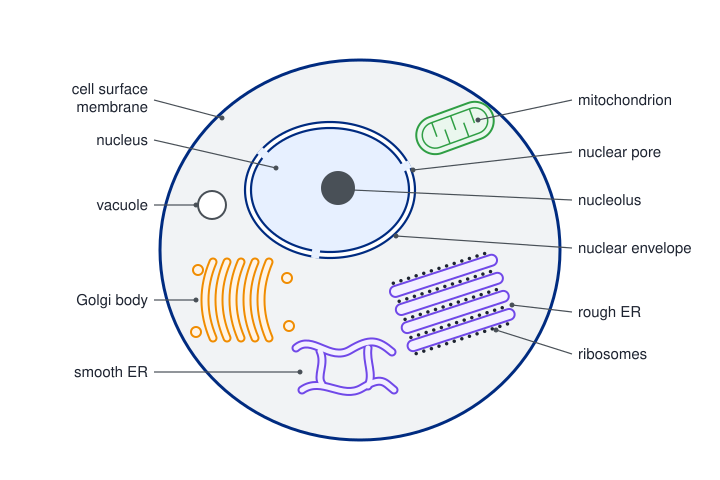
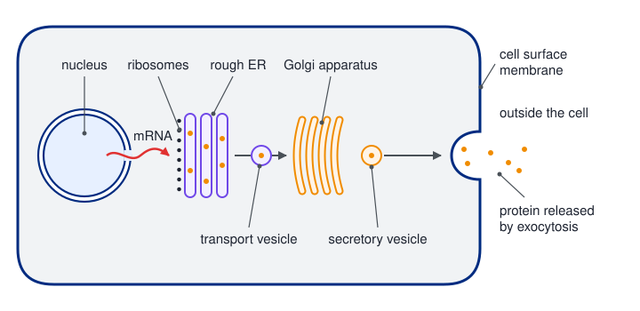
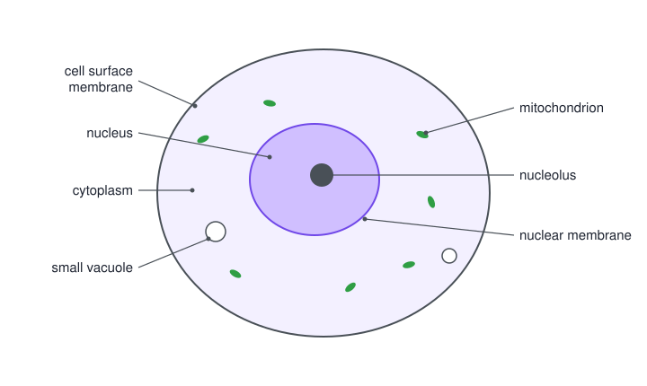

Cell structure
Every organism is built from cells, and inside each cell different structures carry out different jobs. This page covers the ultrastructure of eukaryotic and prokaryotic cells, the route a secreted protein takes through the cell, how cells are grouped into tissues and organs, and how microscopes, stains and simple calculations let us measure what we see.
Spec3.1All living organisms are made of cells
Know that every living organism is made of one or more cells, and that all cells share some basic features.
Cell theory
- Every living organism is made of one or more cells. Unicellular organisms (bacteria, yeast, Amoeba) are a single cell; multicellular organisms are made of millions.
- The cell is the smallest unit that can carry out all the processes of life (respiration, growth, reproduction, response…).
- New cells only come from existing cells, by cell division.
Features every cell has
| Feature | Why every cell needs it |
|---|---|
| Cell surface membrane | separates the cell from its surroundings and controls what enters and leaves |
| Cytoplasm | where most metabolic reactions happen |
| DNA | the genetic material: codes for the cell's proteins and is copied when the cell divides |
| Ribosomes | the site of protein synthesis (translation) |
Two kinds of cell
| Prokaryotic (bacteria and archaea) | Eukaryotic (animals, plants, fungi, protoctists) | |
|---|---|---|
| Nucleus | none: DNA lies free in the cytoplasm | DNA inside a nucleus with a double membrane |
| DNA | circular, not wound round histone proteins; often plasmids too | linear chromosomes wound round histones |
| Membrane-bound organelles | none | yes: mitochondria, ER, Golgi, lysosomes (and chloroplasts in plants) |
| Ribosomes | smaller, 70S | larger, 80S in the cytoplasm |
| Typical size | about 1–5 µm | about 10–100 µm |
| Cell wall | always: peptidoglycan (murein) | plants: cellulose; fungi: chitin; animals: none |
- Ultrastructure means the detail of a cell that you can only see with an electron microscope (3.3, 3.6).
- The two main groups also show in classification: prokaryotes make up the domains Bacteria and Archaea; every eukaryote is in the domain Eukarya (more in 4.14).
- Eukaryote clue: "this organism has a nucleus" / "prokaryotic cells do not contain a nucleus". Cell membrane and cytoplasm don't count: every cell has them.
- Domain: "Eukarya" (eukaryote / eukaryota accepted). "Prokarya" and "Plantae" are not domains.
- Tick-grids: cell surface membrane, cytoplasm and ribosomes are in animal, plant and prokaryotic cells. Cell wall: plant and prokaryotic only. Nucleolus: not in prokaryotes.
Often asked as: tick-grids of structures in animal, plant and prokaryotic cells; name the domain of an organism; give one reason an organism is not a prokaryote.
"Bacteria have a nucleus" or "bacterial DNA is linear". Bacterial DNA is circular and lies free in the cytoplasm.
Naming "plants" or "Archaea" as the domain of a single-celled organism with chloroplasts. A chloroplast is a membrane-bound organelle, so the organism is in the Eukarya.
Circular DNA in eukaryotic cells: mitochondria and chloroplasts carry their own small circular DNA and 70S ribosomes. So "circular DNA" and "ribosomes" are ticked for animal, plant and prokaryotic cells (WBI12 Jan 2024). Few candidates knew this.
Spec3.2Cells, tissues, organs and organ systems
Understand how the cells of a multicellular organism are grouped into tissues, tissues into organs, and organs into organ systems.
The levels
- Specialised cell: a cell whose structure suits one job (e.g. a red blood cell carrying O₂). Cells become specialised by differential gene expression (3.18).
- Tissue: a group of similar cells (the same cell type) working together to carry out a particular function, sometimes with material between the cells.
- Organ: a group of different tissues working together to carry out one or more functions.
- Organ system: a group of organs working together to carry out a major function.
Examples at each level
| Level | Animal example | Plant example |
|---|---|---|
| Specialised cell | red blood cell, sperm, ciliated epithelial cell | palisade mesophyll cell, root hair cell, guard cell |
| Tissue | squamous epithelium, cardiac muscle, blood (a connective tissue), nervous tissue | xylem, phloem, palisade mesophyll, spongy mesophyll, sclerenchyma, meristem |
| Organ | heart (cardiac muscle + connective tissue + epithelium + nervous tissue), small intestine, lung | leaf, stem, root, flower |
| Organ system | circulatory, digestive, gas exchange, nervous | shoot system, root system |
The four main animal tissue types are epithelial (lines surfaces), connective (blood, bone, cartilage), muscle and nervous.
- Tissue: "group of (similar) cells working together to perform a (specific) function". Cells with a similar structure, function or origin are accepted.
- Organ: "(group of) tissues which work together to perform {a function / functions}". "Same tissues" is not accepted.
- Organ system: "group of organs that work together to perform {one / one or more / specific} functions".
- Organ v tissue: "an organ has many functions whereas a tissue has one (or fewer)"; "an organ has several tissues / cell types whereas a tissue has one cell type / similar cells". Two separate definitions are not pieced together.
- Plant tissue: xylem, phloem, meristem, sclerenchyma, parenchyma, palisade or spongy mesophyll. "Palisade mesophyll cell" is rejected: that's a cell.
Often asked as: one-mark definitions of tissue, organ or organ system; two differences between an organ and a tissue; name a plant tissue.
"A tissue is a group of specialised cells." Too vague: the mark needs similar cells / the same type of cell.
Writing "tissues" for an organ system, or giving the tissue definition for an organ.
Naming a cell, a molecule or an organ when a tissue is asked for.
Spec3.3Eukaryotic cell ultrastructure and organelle functions
(i) Know the ultrastructure of eukaryotic cells: nucleus, nucleolus, ribosomes, rough and smooth endoplasmic reticulum, mitochondria, centrioles, lysosomes and Golgi apparatus. (ii) Understand what each of these does.
Organelle → structure → function
| Organelle | Structure | Function |
|---|---|---|
| Nucleus | largest organelle (about 10–20 µm). Nuclear envelope = double membrane with nuclear pores. Contains chromatin (DNA wound round histones) in the nucleoplasm | holds the genetic material; site of DNA replication and transcription. Pores let mRNA and ribosome subunits out, and nucleotides and proteins in |
| Nucleolus | dense, dark region inside the nucleus; no membrane; made of rRNA, protein and the DNA that codes for rRNA | makes rRNA and assembles ribosome subunits |
| Ribosomes | tiny (about 25 nm), no membrane; a large and a small subunit made of rRNA and protein; 80S in the cytoplasm. Free in the cytoplasm or attached to rER | site of protein synthesis (translation). Free ribosomes make proteins used inside the cell; rER ribosomes make proteins for secretion, membranes or lysosomes |
| Rough ER (rER) | flattened membrane sacs (cisternae) continuous with the nuclear envelope; outer surface studded with ribosomes | proteins made on its ribosomes enter the space inside, fold into their 3D shape and are transported in vesicles to the Golgi (3.4) |
| Smooth ER (sER) | membrane tubes and sacs with no ribosomes | makes and processes lipids (phospholipids, cholesterol) and steroid hormones |
| Golgi apparatus | a stack of flattened, curved membrane sacs (cisternae), not joined to each other, with vesicles budding off the edges; no ribosomes | modifies proteins (e.g. adds carbohydrate to make glycoproteins), then packages them into vesicles: secretory vesicles for exocytosis, or lysosomes |
| Mitochondrion | double membrane; inner membrane folded into cristae (large surface area); fluid matrix with enzymes, its own circular DNA and 70S ribosomes; about 1–10 µm long | site of aerobic respiration, which produces ATP. Many in very active cells (muscle, sperm midpiece, secretory cells) |
| Lysosome | small vesicle with a single membrane, containing hydrolytic (digestive) enzymes; no internal structure; made by the Golgi | digests worn-out organelles, pathogens taken in by phagocytes, or whole dead cells. The membrane keeps the enzymes away from the rest of the cell |
| Centrioles | a pair of short hollow cylinders at right angles, each made of nine triplets of microtubules; near the nucleus; in animal cells (not most plant cells) | organise microtubules to form the spindle fibres in mitosis and meiosis, which separate chromosomes/chromatids |
The cell surface membrane (a phospholipid bilayer with proteins, from Unit 1) surrounds all of this.
Animal v plant cells: plant cells also have a cellulose cell wall, chloroplasts, a large permanent vacuole (with its tonoplast), amyloplasts and plasmodesmata, and usually no centrioles. That is Topic 4 (4.1).

"Function" questions want a verb plus a product: "aerobic respiration to make ATP", "makes ribosomes", "forms spindle fibres", "contains hydrolytic enzymes that digest pathogens". A description of the structure scores nothing when function is asked.
Drawing a nucleus: two lines for the envelope with gaps for pores, a dark nucleolus, patches of chromatin. Draw only the nucleus, not the whole cell.
- Mitochondrion: "aerobic respiration", "produces ATP" (Krebs cycle, oxidative phosphorylation accepted). "Produces energy" is not accepted.
- Nucleolus: "produces ribosomal subunits" (ribosomes / rRNA accepted). "Contains genetic material" is ignored.
- Nucleus: "contains the genetic material / DNA", "DNA replication", "transcription". Plain "controls the cell" is ignored.
- Centriole: "forms spindle fibres in mitosis / meiosis" (forms microtubules accepted) "to separate chromosomes / chromatids". Centromere for centriole is rejected.
- Lysosome: "contains digestive / hydrolytic enzymes" or "digests pathogens / organelles". Plain "enzymes" is ignored.
- Drawing the rER: at least two tubules with ribosomes on the surface; cisternae and ribosomes labelled. Drawing a nucleus: double membrane, pores as gaps, nucleolus, chromatin. One wrong label caps the label marks.
- Two structures inside the nucleus: "nucleolus" and a named genetic material (DNA, chromatin, chromosomes). The envelope, pores and nucleoplasm aren't credited.
- Prophase events: chromosomes condense, nuclear envelope breaks down, centrioles move to the poles and produce spindle fibres.
Often asked as: name an organelle from a description or EM and give its function; draw and label a nucleus, rER or Golgi; compare a lysosome with an acrosome; suggest why mitochondria sit next to lipid droplets.
"Mitochondria produce energy." Energy can't be produced: say "aerobic respiration, which produces/releases ATP".
Confusing the nucleolus with the nucleus, the centriole with the centromere, or rER with sER (look for ribosomes). Saying the Golgi "makes proteins": it modifies and packages them.
Label lines that stop in the cytoplasm instead of touching the structure.
In a compare question, writing a paragraph about each organelle. Use paired sentences: "both have…; a lysosome… whereas an acrosome…".
- Chloroplasts and mitochondria both have a double membrane and both contain ribosomes and circular DNA (WBI12 Jan 2026).
- Lysosome v acrosome: both are single-membrane vesicles of hydrolytic enzymes made by the Golgi; a lysosome digests inside the cell, the acrosome digests the zona pellucida outside it (WBI12 Jun 2023).
- Mitochondria next to lipid droplets in an egg: a short diffusion distance, so fatty acids reach the mitochondria quickly for respiration to make ATP (WBI12 Jan 2021).
- The number of organelles roughly doubles in interphase before a cell divides, so each daughter cell gets a full set (WBI12 Jun 2021).
Spec3.4The rER and Golgi in protein transport
Understand how the rough ER and the Golgi apparatus move proteins through a cell, including how extracellular enzymes are made and released.
The secretory pathway, step by step
Follow one protein, e.g. amylase made by a pancreas cell:
- Nucleus: the gene is transcribed into mRNA, which leaves through a nuclear pore.
- Ribosomes on the rER: the mRNA is translated; the growing polypeptide passes into the rER lumen.
- rER: the polypeptide folds into its secondary and tertiary structure (hydrogen, ionic and disulfide bonds form). It is packaged into a transport vesicle that buds off the rER.
- The vesicle moves to the Golgi and fuses with it, so the protein enters the Golgi.
- Golgi: the protein is modified (for example, carbohydrate is added to make a glycoprotein), then sorted and packaged into secretory vesicles that bud off.
- Secretory vesicles move to the cell surface membrane, fuse with it and release the enzyme outside the cell by exocytosis.
Mitochondria supply the ATP for moving vesicles and for exocytosis.
Extracellular enzymes
- An extracellular enzyme works outside the cell that made it: digestive enzymes (amylase, trypsin, lipase), enzymes that fungi release to digest wood, the enzymes a Venus flytrap or pitcher plant secretes onto its prey.
- Cells that secrete a lot of protein (pancreas, salivary glands, plasma cells) are packed with rER, Golgi and mitochondria.
- The Golgi sends proteins to other places too: lysosomes (enzymes kept inside the cell), and proteins built into the cell surface membrane.
Evidence: following labelled amino acids
Pancreas cells are given radioactive (or fluorescent) amino acids for a short time, then samples are taken over time.
The label appears first in the rER, then the Golgi, then secretory vesicles, and finally outside the cell.
Explain it: the amino acids are built into polypeptides on the rER ribosomes; the protein moves in vesicles to the Golgi, is modified and packaged, and leaves by exocytosis. Inside the cell the label falls as outside it rises.

In the nucleus, the gene for the protein is transcribed into mRNA, which leaves through a nuclear pore.
The mRNA attaches to a ribosome on the rough ER. As the polypeptide is made, it is fed into the lumen of the RER.
Making it straight into the RER keeps the protein separate from the cytoplasm, so it can be packaged for export.
Inside the RER the polypeptide folds into its secondary and tertiary structure, and it moves through the ER sacs.
Small transport vesicles pinch off the RER, carrying the protein. They move to the Golgi apparatus and fuse with its cis face.
In the Golgi apparatus the protein is modified, for example by adding carbohydrate to form a glycoprotein, and then sorted.
Secretory vesicles bud from the trans face of the Golgi and move along the cytoskeleton to the cell surface membrane.
The vesicle membrane fuses with the cell surface membrane and the protein is released outside the cell. This is exocytosis.
Exocytosis needs ATP, which is why secretory cells contain many mitochondria.
Use the protein's name from the question ("insulin", "the enzyme", "acrosin") at every step. Marks for the link are lost if you write just "protein". If the question gives you the polypeptide, don't start with transcription: start where the question starts.
- Route (5 marks, insulin): "rER packages insulin in a vesicle"; "vesicle fuses with the Golgi apparatus" and insulin is modified; "Golgi packages insulin in (secretory) vesicles"; "vesicles fuse with the cell surface membrane"; "exits by exocytosis".
- rER alone: "translation at rER ribosomes / polypeptide enters the rER"; "forms secondary / tertiary / 3D structure" with named bonds; "packaged into vesicles to go to the Golgi".
- Golgi alone: "modification of the protein (into the enzyme)"; "packaged into secretory vesicles"; "leaves the cell by exocytosis".
- Glycoprotein: "carbohydrate added (in the Golgi)" (glycosylation accepted). "Modified in the Golgi" with no carbohydrate is ignored.
- Drawing a Golgi: at least two curved cisternae, no ribosomes or connections, a vesicle, cisternae labelled.
- Tracer data: label "decreases inside the cell / increases outside"; "vesicles fuse with the cell surface membrane and release…". Amino acids themselves leaving is ignored.
Often asked as: describe how an enzyme or hormone is made and secreted (3–5 marks, often in a plant, fungus or sperm context); the role of the rER or Golgi alone; explain tracer data; draw a Golgi.
Giving the Golgi's role when the rER was asked, or the reverse. Saying amino acids are exocytosed: the finished protein is.
Writing "moves to the Golgi". The mark is for the vesicle fusing with the Golgi, and this is the step most often missed.
Writing "proteins" when the question is about enzymes; mixing up transcription and translation; writing lipids for proteins.
- Glycoproteins are made in the Golgi by adding carbohydrate chains to a protein, e.g. the Rhesus antigen (WBI12 Oct 2022) and mucus.
- The rER vesicle fuses with the Golgi (at its "cis" face, where vesicles arrive); secretory vesicles bud from the opposite "trans" face (WBI12 Jan 2020).
- Enzymes in the egg's cortical granules are made by the same rER → Golgi route (WBI12 Oct 2024).
- Role of one organelle in making acrosin: nucleus (transcription), ribosome (translation), rER (folding, packaging), Golgi (modification, packaging) or mitochondria (ATP). The acrosome itself is not credited: it only stores the enzyme (WBI12 Jun 2022).
Spec3.5Prokaryotic cells
(i) Know the ultrastructure of prokaryotic cells: cell wall, capsule, plasmid, flagellum, pili, ribosomes and circular DNA. (ii) Understand what each structure does.
Structure → function
| Structure | What it is | Function |
|---|---|---|
| Cell wall | rigid layer of peptidoglycan (murein): polysaccharide chains cross-linked by short peptides | stops the cell bursting when water enters by osmosis; keeps its shape |
| Capsule (slime layer) | layer of polysaccharide outside the cell wall | protects against drying out, against being engulfed by phagocytes, and against antibodies; helps bacteria stick to surfaces and to each other |
| Cell surface membrane | phospholipid bilayer | controls what enters and leaves; some respiration enzymes are on it |
| Circular DNA | one long circular DNA molecule, not bound to histones, free in the cytoplasm (the nucleoid region) | carries the genes for almost all the cell's proteins |
| Plasmids | small extra rings of DNA that copy themselves independently | carry extra genes, e.g. for antibiotic resistance; can be passed between bacteria |
| Ribosomes | 70S: smaller than eukaryotic 80S ribosomes | protein synthesis (translation) |
| Flagellum | long protein filament attached at the cell membrane, rotated by a motor at its base | movement (motility) through liquid |
| Pili | short, thin protein threads on the surface | attachment to surfaces and host cells; a sex pilus joins two bacteria for conjugation (plasmid transfer) |
- Always present: cell wall, cell surface membrane, cytoplasm, circular DNA, 70S ribosomes.
- Only some bacteria: capsule, plasmids, flagella, pili.
- Never present: nucleus, nucleolus, mitochondria, ER, Golgi, chloroplasts or any other membrane-bound organelle.
- Capsule: "prevents dehydration of the cell"; protection from phagocytes / antibodies / antibiotics accepted; helps adhesion. Plain "protection" is too vague.
- Pili: "allow bacteria to adhere to surfaces"; conjugation / exchange of plasmids accepted. "Sexual reproduction" is ignored.
- Flagellum: "for (cell) motility / movement".
- Plasmid: "contains genes to make proteins", e.g. antibiotic resistance. Say what it does, not just what it is.
- Ribosomes: "70S whereas eukaryotic ribosomes are 80S", or "smaller than eukaryotic ones". You need both halves of the comparison.
- Structures that make an enzyme in a bacterium: "chromosome / circular DNA and (70S) ribosomes". Both are needed. The nucleus, rER or Golgi are wrong.
- Wall molecule: plant "cellulose"; prokaryote "peptidoglycan / murein".
- Bacteria using O₂: "for aerobic respiration / to produce ATP". "Produce energy" is rejected.
Often asked as: state the function of a capsule, pilus, flagellum or plasmid; draw and label two of them on an outline; how prokaryotic ribosomes differ; compare a fungal cell with a bacterium.
Drawing the capsule or pili inside the cell wall, or a flagellum that doesn't start at the membrane.
Confusing a plasmid with plasmodesmata (channels between plant cells).
Writing chitin for the bacterial wall (chitin is fungal). In a compare question, wrong statements cancel right ones, so leave out anything you're unsure of.
- 70S v 80S: "S" is a measure of how fast the particle sinks in a centrifuge, so bigger means larger. Prokaryotes have 70S ribosomes; eukaryotes have 80S in the cytoplasm but 70S inside mitochondria and chloroplasts (WBI12 Jan 2020, Oct 2022).
- Fungus v bacterium: a fungal cell has a nucleus, linear DNA, membrane-bound organelles, 80S ribosomes and a chitin wall (WBI12 Jan 2025).
- A bacterium living on dry skin doesn't need a flagellum: it isn't in a liquid, so it can't swim anyway (WBI12 Oct 2024).
Spec3.6Recognising organelles in electron micrographs
Be able to identify the organelles listed in 3.3 in electron microscope (EM) images.
What to look for
| Organelle | How it looks in a TEM | Don't confuse it with |
|---|---|---|
| Nucleus | the largest structure; a double envelope (two close lines, broken by pores); grainy, dark patches of chromatin | a vacuole (single membrane, no contents) |
| Nucleolus | the darkest, densest round area inside the nucleus; no membrane round it | the nucleus itself |
| Mitochondrion | oval, sausage-shaped or round profiles about 1 µm across; double membrane; inner membrane folded into shelves (cristae); grainy matrix | a chloroplast (bigger, with stacks of membranes called grana) |
| rER | parallel flattened sacs whose outer surfaces are dotted with ribosomes; often near the nucleus | the Golgi (no dots) |
| sER | tubes and sacs with no dots | rER |
| Golgi apparatus | a stack of curved, flattened sacs, not joined, with small round vesicles at the edges; no ribosomes | rER |
| Ribosomes | tiny dark dots, free in the cytoplasm or on the rER | — |
| Lysosome | small, round, dark body with a single membrane and no internal structure | a secretory vesicle (usually paler) |
| Centrioles | two short cylinders at right angles: one cut lengthwise looks like a striped rectangle; one cut across looks like a ring of nine tiny groups | — |
Why the same organelle can look different
- An electron micrograph shows a thin slice. A 3D organelle cut across looks round; cut lengthwise it looks long. Two photos of the same organelle can differ because of the angle (plane) of the cut.
- EM images are black and white. Colour in a published EM is false colour, added afterwards.
- Fine internal detail (cristae, ribosomes, membranes) means the image came from an electron microscope. A 3D surface view means a scanning EM (3.7).
- Different appearance: "viewed from a different angle / one is a transverse and one a longitudinal section"; "depends on where the cell was cut".
- Which microscope: "electron microscope" because of the "high resolution", so (ultra)structure can be seen. A 3D image of a pollen grain's surface: scanning EM (TEM rejected). "Image is clear" is ignored.
- Chloroplast function: "site of photosynthesis / light absorption". "Produces ATP" alone and "stores starch" are ignored.
Often asked as: name or label structures on an EM; suggest why two images of one organelle differ; state which type of microscope was used and why.
Saying two images of the same organelle differ in magnification, resolution or staining when they come from the same photo: it's the plane of the section.
Choosing a light microscope because the image is 2D or black and white.
Failing to recognise centrioles (often called mitochondria or lysosomes) or a chloroplast.
Spec3.7Magnification, resolution and staining
(i) Know how light and electron microscopes achieve magnification and resolution. (ii) Understand why specimens are stained.
Two different ideas
- Magnification: how many times bigger the image is than the real object.
- Resolution: the ability to distinguish between two points that are close together as separate points. The smaller the distance, the higher the resolution and the more detail you see.
- Magnifying beyond the resolution just makes a bigger blur. Detail comes from resolution, not magnification.
magnification = image size ÷ actual size
Rearranged: actual size = image size ÷ magnification; image size = actual size × magnification. Both sizes must be in the same units.
| Convert | Multiply by |
|---|---|
| mm → µm | 1000 |
| µm → nm | 1000 |
| cm → µm | 10 000 |
Light v electron microscopes
| Light microscope | Transmission EM (TEM) | Scanning EM (SEM) | |
|---|---|---|---|
| Uses | light, focused by glass lenses | a beam of electrons passing through the specimen, focused by electromagnets | electrons scanned across the surface; scattered electrons form the image |
| Resolution | about 200 nm | about 0.5 nm (best) | about 3–10 nm |
| Useful magnification | up to about ×1500 | over ×500 000 | lower than TEM (about ×100 000) |
| Image | colour, 2D | black and white, 2D, internal detail | black and white, 3D surface |
| Specimen | living or dead | dead, very thin section, in a vacuum | dead, in a vacuum; needn't be thin |
- Why electrons resolve more: resolution is limited by wavelength. Light has a wavelength of about 400–700 nm, so points closer than about 200 nm blur together. Electrons have a much shorter wavelength.
- Drawbacks of EM: specimens must be dead (vacuum), preparation is complex, and preparation can create artefacts (structures that weren't there in the living cell).
Why stain?
- Most cell structures are colourless and transparent, so there is little contrast between them.
- A stain binds to particular molecules or structures and colours them, so they stand out from their surroundings. Using two stains that bind different things (differential staining) separates structures.
- Staining improves contrast, not resolution or magnification.
| Stain | What it shows |
|---|---|
| Methylene blue | nuclei (DNA) blue, e.g. cheek cells (CP5) |
| Acetic orcein / toluidine blue | chromosomes, so stages of mitosis can be identified (CP6) |
| Iodine solution | starch blue-black |
| Phloroglucinol + acid, or safranin | lignin red (xylem, sclerenchyma; safranin also stains nucleic acids) |
| Nile red | lipids |
| Eosin | cytoplasm pink |
For electron microscopes, specimens are "stained" with heavy metal salts, which absorb electrons and show up dark.
magnification from a scale bar
A 2 µm scale bar on a micrograph measures 18 mm with a ruler.
Convert to the same unit: 18 mm × 1000 = 18 000 µm.
Magnification = 18 000 ÷ 2 = ×9000 (write no unit).
A mitochondrion in the same image is 27 mm long. Actual length = 27 000 µm ÷ 9000 = 3 µm (= 3 × 10⁻³ mm = 3000 nm).
actual size
A cell in a drawing is 45 mm across; the magnification is ×1500.
Actual size = 45 000 µm ÷ 1500 = 30 µm.

A mitochondrion measures 36 mm long on an electron micrograph with a magnification of ×12 000. Find its real length in µm.
Convert the image length to µm: 36 mm × 1000 = 36 000 µm.
Converting first avoids answers that are out by a factor of 1000.
Actual size = image size ÷ magnification = 36 000 ÷ 12 000 = 3 µm.
Check: 3 µm is a sensible length for a mitochondrion (usually 1 to 10 µm).
A scale bar labelled 5 µm is 25 mm long on the printed image.
Convert the bar length: 25 mm = 25 000 µm.
Magnification = 25 000 ÷ 5 = ×5000.
A scale bar is just an object of known size, so the same equation applies.
- Magnification: measure the scale bar (not the specimen), convert mm to µm (×1000), divide by the scale bar's value. No unit. Usually ±1 mm tolerance; follow the s.f. or d.p. asked.
- Resolution: "the ability to distinguish between two points which are close together".
- Magnification: "how many times bigger an object appears in an image than in real life". The equation alone is ignored.
- Why a structure can't be seen with a light microscope: "the resolution (or magnification) of a light microscope is not high enough" and "the structure is very small". For the membrane bilayer: "the two layers are very close together".
- Why an EM image shows more: "more structures can be seen as separate due to the higher resolution". Plain "high resolution" is ignored.
- Why stain: "to increase contrast", "to make the chromosomes / chromatids visible" (to identify stages of mitosis). "To make cells / organelles visible" is ignored.
Often asked as: calculate a magnification from a scale bar (almost every paper); calculate an actual size; explain why a structure can't be seen with a light microscope; define resolution; why stain.
Converting cm to µm by ×1000 (it's ×10 000). Inverting the formula. Putting µm after a magnification.
Giving 2 d.p. when 2 s.f. was asked.
Saying an EM shows more because it has higher magnification. The reason is resolution (shorter wavelength).
Stating the equation without rearranging it when actual size is asked.
- Named stains: acetic orcein (WBI12 Jan 2020); safranin (lignin, nucleic acids) v nile red (lipids) (WBI12 Oct 2025).
- Sphere volume V = ⁴⁄₃πr³ (formula given): use the radius, half the diameter (WBI12 Jun 2025). SA:V of a cube: SA = 6l², V = l³, give it as x : 1 (WBI12 Oct 2021).
- Unit conversions inside a rate: 15 mm at 0.2 µm s⁻¹ = 15 000 ÷ 0.2 = 75 000 s (WBI12 Jan 2024).
Spec3.8Core Practical 5: light microscopy, drawings and graticules
(i) Use a light microscope to observe suitable animal cells and make labelled drawings. (ii) Use an eyepiece graticule to measure cells, and understand scale.
The two scales
- The eyepiece graticule is a scale of 100 equal divisions inside the eyepiece. It has no units: its divisions (eyepiece units, epu) cover a different real length at each objective.
- The stage micrometer is a slide with a scale of known length (often 1 mm divided into 100 divisions, so each is 10 µm; check the slide).
- Calibrating means finding out how many µm one eyepiece division is worth at the objective you're using.
Core practical 5: method in brief
Calibrate
- Put the stage micrometer on the stage and focus on it with the low-power objective.
- Turn the eyepiece until its graticule lies alongside the micrometer scale, with the zeros lined up.
- Find a point further along where the two scales line up again. Note the number of eyepiece divisions and the length on the micrometer.
- 1 epu = length on micrometer ÷ number of eyepiece divisions.
- Repeat for every objective (each has its own value).
Observe and measure cheek cells
- Gently scrape the inside of your cheek with a clean cotton bud and smear it on a slide.
- Add a drop or two of methylene blue (stains the nuclei), lower a coverslip at an angle with a mounted needle to avoid air bubbles, and blot off excess stain.
- Focus with the low-power objective first (coarse focus, moving the lens away from the slide), then switch to high power and use the fine focus only.
- Measure several cells in eyepiece units and convert with the calibration value. Calculate a mean.
- Draw a few cells, label them, and add a title, the magnification and a scale bar.
calibrating and measuring
At ×40 objective, 10 micrometer divisions (100 µm) line up with 40 eyepiece divisions.
1 epu = 100 µm ÷ 40 = 2.5 µm.
A cheek cell measures 24 epu across → 24 × 2.5 = 60 µm.
At the ×10 objective each eyepiece division covers 4 times more: 1 epu = 10 µm. That's why you recalibrate when you change objective.
drawing a scale bar
Your drawing is at ×800. You want a scale bar for 10 µm.
Length of bar = 10 µm × 800 = 8000 µm = 8 mm. Draw an 8 mm line and label it "10 µm".
Drawing rules
- Sharp HB pencil; clear, continuous lines; no shading or colouring.
- Draw only what you see, large, with proportions correct.
- Ruled label lines, no arrowheads, each touching the structure, not crossing each other.
- Title, magnification and/or a scale bar. A cell drawing shows individual cells; a plan diagram shows only tissue outlines (CP7 in Topic 4).
Safety, errors and improvements
- Cheek swabs: each used once by one person, then straight into disinfectant. Methylene blue stains skin and is an irritant: gloves and eye protection.
- Never point the mirror at direct sunlight.
- Errors: forgetting to recalibrate at a new objective; cells overlapping or folded; judging cell edges. Improve by measuring many cells and using a mean.
Line up the eyepiece graticule with the stage micrometer at the objective you will use.
Find a point where the scales match: for example, 40 eyepiece divisions cover 10 stage divisions, which is 10 × 10 µm = 100 µm.
One eyepiece division = 100 µm ÷ 40 = 2.5 µm at this magnification.
Remove the micrometer, put the specimen on the stage and measure it. A cell 24 divisions long is 24 × 2.5 = 60 µm long.
If you change objective, the calibration must be repeated, because each division now covers a different real length.
CP5 has not been examined as a whole practical in WBI12 (2019–2026). Its skills come up constantly through magnification and scale-bar calculations (3.7). Learn the calibration as a four-line method.
Quoting a graticule reading in µm without calibrating. Calling the stage micrometer "the graticule". Shading drawings or using arrows on label lines.
Quick checks
Which organelle adds carbohydrate to proteins to form glycoproteins before they are secreted?
The Golgi apparatus modifies proteins, including adding carbohydrate, and packages them into secretory vesicles. The RER is the commonest wrong answer: it receives and folds the polypeptide, but the main modification and packaging happen in the Golgi.
Which structure is found in a prokaryotic cell but never in a eukaryotic animal cell?
Animal cells have no cell wall, and only bacteria have walls made of peptidoglycan. Ribosomes are present in both cell types; they differ in size (70S and 80S) but are not absent from eukaryotes.
Why can an electron microscope show ribosomes when a light microscope cannot?
Detail depends on resolution, which depends on wavelength. The shorter wavelength of electrons lets points less than 1 nm apart be distinguished. Extra magnification without better resolution only enlarges a blurred image, which is why the second option is wrong.
A cell is 40 µm in diameter. In a drawing it is 80 mm across. What is the magnification of the drawing?
80 mm = 80 000 µm, and 80 000 ÷ 40 = 2000. Forgetting to convert millimetres to micrometres gives ×2, the commonest error.
Forty eyepiece divisions line up with 0.2 mm on a stage micrometer. How long is a cell that spans 15 eyepiece divisions?
0.2 mm = 200 µm, so one eyepiece division = 200 ÷ 40 = 5 µm. The cell is 15 × 5 = 75 µm. The answer 5 µm is the value of a single division, not the length of the cell.
Which statement correctly distinguishes an organ from a tissue?
A tissue is a group of similar cells doing a particular job, while an organ is built from several tissues. The first option reverses the two definitions, and plants have tissues too, such as xylem and phloem.